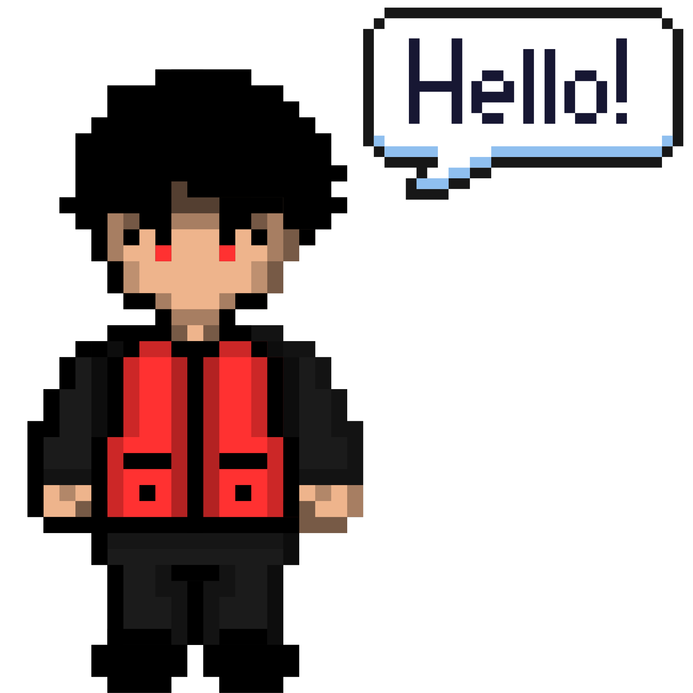
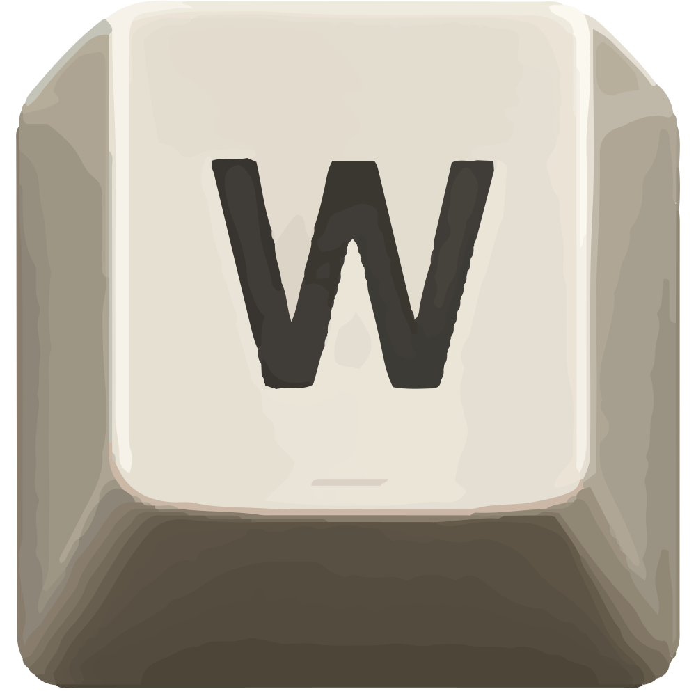
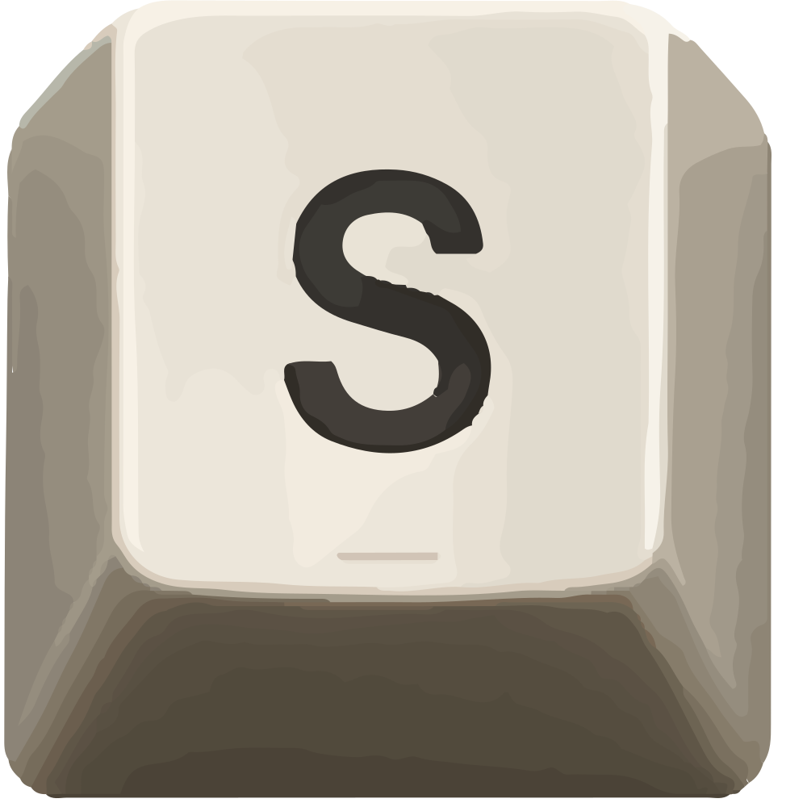

While my achievements reflect my past experiences, they often fail to capture the complete
narrative. I created this web to express the deeper motivations, curiosity, and purpose that
genuinely inspire my work each day.

